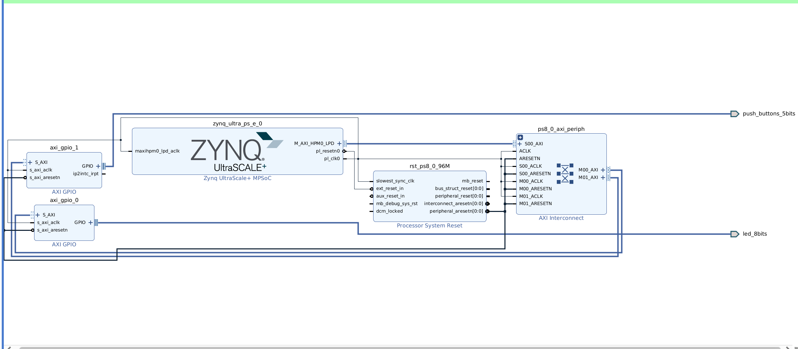

ZCU102提升-PL 协同 PS
写在开头
本文正式对 ZynqMP Ultrascale+ 的重点特性—— PL 协同 PS 共同工作进行了初步探索。具体为在 PL 段烧写两个 GPIO 控制器来控制 LED 灯和五个按钮，并编写 PS段程序实现按钮通过中断来控制 LED 灯。
探索过程极其曲折，以至于笔者不得不用一张图来表达现在的心情：
Vivado
准备工作
工作环境 vivado 2024.1, ubuntu 22.04.3。
创建 vivado 工程，例如叫做 ZCU102-PSPL-LED。
和 Helloworld 一样在 Block Design 对 ZynqMP 芯片初步配置。
GPIO配置
点击 + 号新增两个 GPIO
GPIO全拼叫General Purpose Input Output（通用输入输出）简称IO口也叫总线扩展器，这里我们加入的 GPIO 将可以让 PL段的 LED灯、按钮得以通过 GPIO 连接到 AXI 进而和 PS 进行交互。
GPIO 0 配置 LED 输出
Xilinx 提供的 AXI GPIO IP 核有两条通道，因此其实可以使用一个 GPIO 同时管理 LED 和按钮，但为了简化，我们就只使用一通道。
GPIO 1 配置 Button 输入，并在下方配置中断

对比一下 GPIO0 就会发现模块上多了一条信号线 ip2intc_irpt。 GPIO 通过此来发送中断信号。
点击
Run Connection Automation并全选，自动将 MPsoc 和两个 GPIO 连接起来。最终效果类似下图：

PS 中断配置
至此，我们可以看到图中的 ip2intc_irpt 还没有连线，我们需要对此进行配置。
重新配置 MPSOC，在 PS-PL Configuration 下找到 Interrupts -> PL to PS -> IRQ0，Select 改为 1。
可以看到 MPsoc 芯片上也多了一条信号，叫
pl_ps_irq0。在图上拖动鼠标，将
ip2intc_irpt和pl_ps_irq0连接起来即可。这样的连线表明，gpio1产生的中断将通过 pl_ps_irq0 传入到 ps 中，进而传入到arm的中断控制器 GIC 中。
Debug 检查（选做）
为了更好的理解工作原理，我非常建议对中断信号进行一个 debug 处理，即引入一个 ILA 来监测信号变化。
点击 + 号添加一个 ILA。
双击 ILA 配置如下。
Sample Data Depth 可以任选，这代表了可以一次捕捉多少波形，越大在综合时消耗的板上资源越多，所以酌情处理。
Number of Probes 代表了探测多少信号，这里我们只探测一个中断信号。
Capture Control 需要选上，这样我们可以设置捕捉什么样电位的信号。
将
Probe0和ip2intc_irpt连接起来。如果配置了此部分，我们可以在之后运行程序时，打开 Vivado 的 Hardware Manager 来捕捉中断信号的波形。
后续工作
和 helloworld 类似，在生成比特流成功后导出 xsa，这次由于在 PL 实现了两个 GPIO 控制器，因此一定要勾选 Include BitStream。
Vitis
准备工作
和 helloworld 一样，基于导出的 xsa 生成 platform。
创建 APP
这次我们由于要自己编写程序，所以理应是创建 Empty Application，但是这样会需要自己导入头文件目录，比较麻烦，所以我们继续创建一个 Helloworld 的 Example Application。
修改文件
我们在 helloworld.c 重写自己的逻辑，代码如下
main 函数
1
2
3
4
5
6
7
8
9
10
11
12
13
14
15
16
17
18
19
20
21
22
23
24
25
26
27
28
29
30int main ()
{
// 打印一个字符画，出于美观的原因
print("ooooo oooooooooooo oooooooooo. ooooooooooooo oooooooooooo .oooooo..o ooooooooooooo\r\n");
print("`888' `888' `8 `888' `Y8b 8' 888 `8 `888' `8 d8P' `Y8 8' 888 `8\r\n");
print(" 888 888 888 888 888 888 Y88bo. 888\r\n");
print(" 888 888oooo8 888 888 888 888oooo8 `Y8888o. 888\r\n");
print(" 888 888 888 888 888 888 `Y88b 888\r\n");
print(" 888 o 888 o 888 d88' 888 888 o oo .d8P 888\r\n");
print("o888ooooood8 o888ooooood8 o888bood8P' o888o o888ooooood8 88888888P' o888o\r\n");
print("---Entering main---\n\r");
{
int status;
print("\r\nRunning GpioOutputExample for axi_gpio ... \r\n");
// 调用核心测试函数，传入两个在 xparameters.h 中定义的 GPIO 基地址。
status = GpioOutputExample(XPAR_AXI_GPIO_0_BASEADDR, XPAR_AXI_GPIO_1_BASEADDR);
if (status == 0) {
print("GpioOutputExample PASSED \r\n");
} else {
print("GpioOutputExample FAILED \r\n");
}
}
print("---Exiting main---");
return 0;
}GpioOutputExample 函数
1 | int GpioOutputExample(UINTPTR BaseAddress_0, UINTPTR BaseAddress_1) |
- handler_btn 函数
1 | static void handler_btn(void* Callback) |
- 头文件引入和全局变量
1 |
|
- 将上述几段代码拼起来即为全部文件内容。
烧写测试
常规操作
和 helloworld 类似，生成 boot.bin，将 zcu102 启动模式改为 QSPI 启动。烧写完毕后重启板子，等待 GIC 初始化完成后，按动 5个按钮，观察 LED 显示模式是否变化即可。
ILA（选做）
如果之前进行了 ILA 模块的添加和配置，那我们可以观察到按动任意开关时中断信号的变化。
具体方法如下：
连接 jtag 线到电脑
点开 vivado 的 hardware manager。
点击 open target -> auto connect，vivado 将自动检测 jtag，如果检测成功，将会出现我们的开发板。
并且我们可以看到我们添加的 ila_1。
右键图中的 xzcu9_0 ，点击 program device，选择我们的 bit 流，路径在 工程目录/xx.run/xx.impl下.
点击 program 等待烧写完毕，之后重启板子。
重启的原因是一般情况下，此时程序已经运行过了 GPIO 的配置，但我们重新烧写了 PL，相当于 reset 了 GPIO，对于中断的配置将失效，此时我们直接抓信号将得不到正确结果。
点击图中的加号，添加仅有的一根信号线进来
名字发生变化不奇怪，是因为 Vivado 综合实现可能会进行优化，不会保留原有的名字。
修改此信号的抓取逻辑如下，抓取信号为 高电平（1）的时刻。

点击抓取设置左侧的启动，Ila 进入监测模式，检测到高电平将会抓取并显现出来。
此时我们任意按下一个板上按钮，正确情况将会抓取到高电平的中断信号
这证明了按下按钮，在正确配置的情况下，gpio控制器将拉高中断信号线，ps我们写的handler 对其进行处理后 gpio中断信号线将重新回到低电位。
写在最后
现有的网络教程版本太为落后，xsa已经使用了SDT这种全新的规范，进而导致 vitis 编写和以往大相径庭，笔者已经被坑惨了，所以建议后来者即使是查看这篇 2024 年的文章，如果时间过于久远，版本差距太大，也应该报有着审慎的态度来学习。
谢谢！